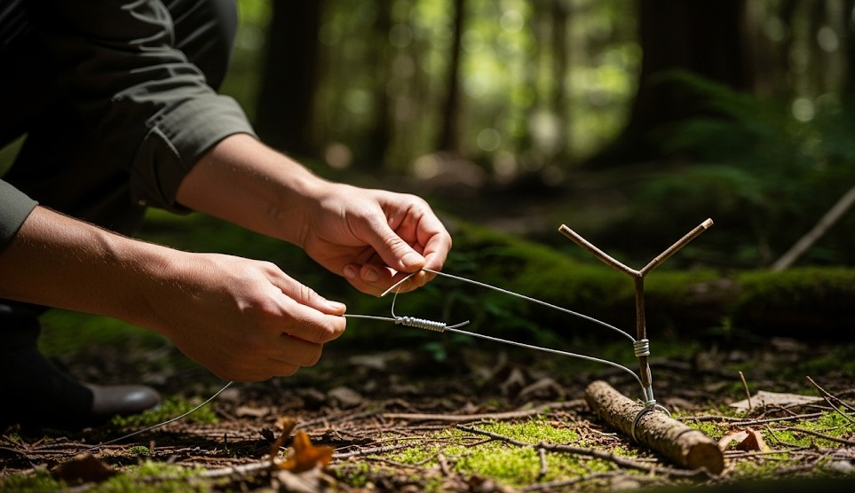

Food Procurement: Snares, Traps, and Legal Reality
Objective
Understand the basics of small‑game procurement with snares and traps in a true survival emergency while respecting legal and ethical constraints.
Legal/Ethical Note
Many regions tightly regulate trapping. This guide is for emergency survival education. Know and follow local laws for normal circumstances.
Principles
- Location beats lure. Set where trails neck down.
- Scent control. Gloves; avoid touching bait with bare hands.
- Multiple sets. Redundancy increases odds.
Common Sets
- Simple snare: Wire loop on a springy branch; loop size matches target.
- Figure‑4 deadfall: Carved trigger under a balanced rock/log; only in real emergencies.
- Funnel trap: V‑shaped sticks guiding into a noose path.
Baits & Sign
- Use natural foods: seeds, nuts, apple cores.
- Look for droppings, hair, and browse marks.
Real Example
Two snares on a constricted rabbit run produced one catch overnight; a third set on an alternate trail was sprung but empty—placement mattered.
Checklist
- Snare wire or bank line
- Knife/multi‑tool
- Gloves
Contingencies
- No sign → stop setting and find food elsewhere; don’t waste energy.
- Non‑target risk → avoid trails used by pets/livestock.
After‑Action
Practice carving clean triggers with scrap wood at home; never deploy non‑legal traps outside true survival.
← Previous | All Articles | Next →